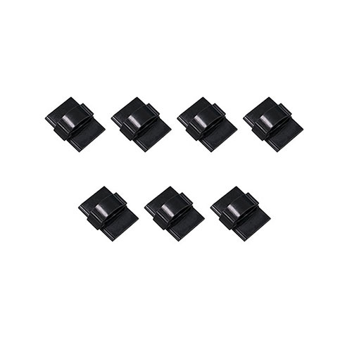

<div class="col-lg-3 col-md-4 col-sm-6">
	<div class="option mb-4">
		
		<div class="card-body-option">
			<p class="card-title">ケーブル固定クランプ（7個、大サイズ）</p>
			<h4 class="card-text">OP-CC07</h4>
			<p class="card-text">1,500円（税抜）</p>
			<p class="card-text">ドライブレコーダーカメラ（DR-7657）をフロントガラスに取り付ける際、カメラケーブルを配線するために使用します。</p>
		</div>
	</div>
</div>